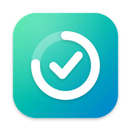

Thói quen · Habits
Cập nhật / Last updated: 11/11/2026
Tiếng ViệtChính sách quyền riêng tư
Ứng dụng Thói quen ("app") được làm với nguyên tắc: dữ liệu của bạn là của bạn.
1. Chúng tôi không thu thập dữ liệu
App không có tài khoản, không có máy chủ riêng, không dùng công cụ phân tích, quảng cáo hay theo dõi. Chúng tôi không thu thập, không bán và không chia sẻ bất kỳ dữ liệu cá nhân nào.
2. Dữ liệu được lưu ở đâu
Thói quen, lịch sử đánh dấu và cài đặt được lưu trên thiết bị của bạn. Nếu bạn bật đồng bộ iCloud, dữ liệu được lưu trong tài khoản iCloud của chính bạn do Apple quản lý; chúng tôi không truy cập được.
3. Thông báo
Nhắc nhở là thông báo cục bộ, được tạo ngay trên thiết bị. Không có dữ liệu nào được gửi ra ngoài.
4. Mua trong app
Giao dịch mua Thói quen Pro do Apple xử lý. Chúng tôi không nhận thông tin thanh toán của bạn; app chỉ nhận từ Apple trạng thái gói đang còn hiệu lực hay không.
5. Trẻ em
App không thu thập dữ liệu của bất kỳ ai, kể cả trẻ em.
6. Xoá dữ liệu
Bạn có thể xoá dữ liệu trong Cài đặt › Dữ liệu, hoặc gỡ app. Dữ liệu iCloud có thể xoá trong cài đặt iCloud của thiết bị.
7. Liên hệ
Câu hỏi về quyền riêng tư: hoangbui.work@gmail.com.
English
Privacy Policy
The Habits app ("the app") is built on one principle: your data is yours.
1. We don't collect data
The app has no accounts, no servers of its own, and no analytics, advertising or tracking. We do not collect, sell or share any personal data.
2. Where your data is stored
Your habits, check-in history and settings are stored on your device. If you turn on iCloud sync, data is stored in your own iCloud account, managed by Apple; we cannot access it.
3. Notifications
Reminders are local notifications created on your device. No data leaves your device.
4. In-app purchases
Purchases of Habits Pro are processed by Apple. We never receive your payment details; the app only receives from Apple whether your subscription is active.
5. Children
The app does not collect data from anyone, including children.
6. Deleting your data
You can delete your data in Settings › Data, or by deleting the app. iCloud data can be removed in your device's iCloud settings.
7. Contact
Privacy questions: hoangbui.work@gmail.com.
© 2026 Bùi Xuân Hoàng · Liên hệ / Contact: hoangbui.work@gmail.com